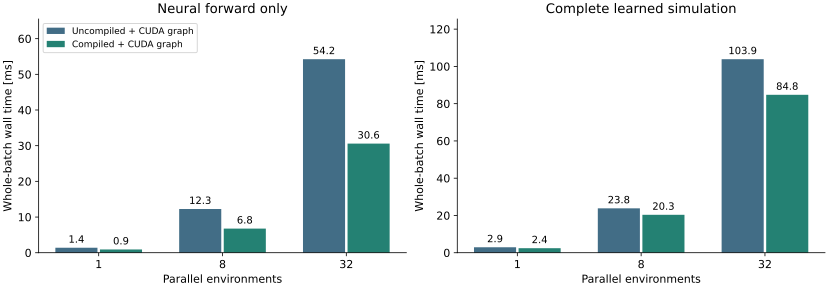
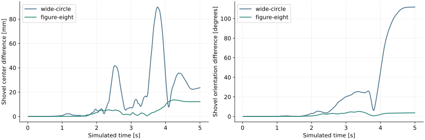

20 October 2026 · RTX 5090 · unchanged shovel checkpoint · 16,384 particles per environment
Measured result: compilation improves neural latency by 1.54–1.81× and complete simulation latency by 1.17–1.23×. Both implementations already use CUDA graphs. Warp and Torch graph capture give essentially the same runtime for the same compiled kernels.
Accuracy limitation: compiled BF16 arithmetic produces small one-step differences that grow during coupled simulation. The wide-circle shovel trajectory diverges substantially. Compilation remains an optional experiment; it is not enabled by default or established as an accuracy-preserving replacement.
| Operation | Current implementation | Experiment |
|---|---|---|
| Particle/collider features | Warp GPU kernels, per environment | Unchanged |
| Particle NeRD forward | Torch operations, BF16, CUDA graph | Compile the same model with TorchInductor, then capture its forward |
| Particle update, analytical contact, rigid dynamics | Warp/MJWarp; separate contact and rigid graphs | Unchanged |
| Checkpoint and inputs | Same trained weights, particle history and collider features | No retraining or architecture change |
The reported copies are GPU device-side copies and dtype conversions. They are not particle transfers to the CPU. The compiler combines operations such as normalization, conversion, addition and division into fewer GPU kernels. Matrix multiplications remain necessary.
In a separate five-forward GPU profile at 32 environments, kernel launches decrease from 206 to 149 per forward. Summed kernel time falls from 53.0 to 29.0 ms. Generated kernels explicitly fuse softmax/conversion/division and LayerNorm/addition/conversion. These are instrumented diagnostic measurements, separate from the latency table below.
Standard FlashAttention is already used for attention between 64 latent slices. The expensive particle-to-slice operations and particle MLPs remain outside that attention kernel. At 32 environments, one FP32 slice-weight tensor occupies 512 MiB: 32 environments × 4 heads × 16,384 particles × 64 slices × 4 bytes. Compilation reduces intermediate memory traffic, but does not remove this scaling cost.

| Environments | Neural: before → after [ms] | Speedup | Complete: before → after [ms] | Speedup |
|---|---|---|---|---|
| 1 | 1.40 → 0.91 | 1.54× | 2.92 → 2.42 | 1.21× |
| 8 | 12.25 → 6.76 | 1.81× | 23.81 → 20.35 | 1.17× |
| 32 | 54.25 → 30.58 | 1.77× | 103.88 → 84.75 | 1.23× |
32-environment compiled simulation still spends about 7.5 ms on feature construction and batch copies, 30.3 ms on the neural forward, and 45.9 ms on particle updates, force estimation and rigid dynamics in a separate instrumented continuation. Feature and contact work still dispatch separately for each environment.
Conclusion: compilation helps, but does not solve parallel-environment scalability. The earlier MPM measurement was 64.0 ms at 32 environments; the compiled learned simulation is still slower. That historical MPM measurement is context, not a new simultaneous or equal-accuracy comparison.
Capturing the same compiled forward through each framework gives 27.62 ms with Torch and 27.72 ms with Warp at 32 environments, with identical outputs. These are medians of four 60-sample runs per framework, with alternating measurement order. The difference is within observed run-to-run variation.
A CUDA graph replays existing CUDA work with less CPU dispatch. It does not automatically fuse kernels or reduce matrix multiplication. TorchInductor changes the kernels; graph capture changes their launch. A mixed Torch/Warp graph is possible using a shared CUDA stream and zero-copy tensor views. Rewriting the network in Warp would only help if its kernels execute the computation more efficiently.
On seven recorded input frames, compiled and uncompiled displacement predictions differ by at most 0.234 mm in any coordinate across the tested batch sizes. One-step RMS component differences are at most 0.0183 mm. These small differences do not establish rollout agreement.

| Drag target | Shovel center RMS / max difference | Max orientation difference | Particle RMS distance | Material-force component RMS difference |
|---|---|---|---|---|
| wide-circle | 27.1 / 89.9 mm | 111.9° | 7.62 mm | 48.3 N |
| figure-eight | 6.2 / 13.6 mm | 5.1° | 1.27 mm | 8.4 N |
Particle RMS distances pool every tenth recorded step and all particles. Shovel pose and force differences use all 250 steps. Forces refer to the estimated material force on the shovel, in world coordinates. The two runs' force RMS scales are approximately 181 N for wide-circle and 222 N for figure-eight. Some particle outliers are much larger than the pooled RMS: maximum particle differences are 0.56 m and 0.087 m respectively.
Repeating the uncompiled simulation reproduced particle positions, shovel positions and force arrays exactly in these tests. Enabling emulate_precision_casts=True did not resolve compiled rollout divergence: maximum shovel orientation differences remained 76.2° and 5.0°. All runs stayed finite and passed contact-solver convergence checks; these checks do not establish physical accuracy.
Decision: keep --compile optional. Before making it the default, evaluate compiled and uncompiled models against the same MPM validation trajectories, including force and long-horizon motion errors. Independently, batch feature generation and contact/rigid operations to address the remaining per-environment cost.
cd ~/isaac/particle_nerd/worktrees/IsaacLab-scalability export PARTICLE_NERD_PYTHON="$HOME/isaac/IsaacLab-particle-nerd/.venv/bin/python" RUN=examples/particle_nerd/run.sh "$RUN" -m particle_nerd.benchmarks.scalability --backend learned --envs 32 \ --output /tmp/learned-uncompiled-32.json "$RUN" -m particle_nerd.benchmarks.scalability --backend learned --envs 32 --compile \ --output /tmp/learned-compiled-32.json
Use --backend network for neural-only timing. The interactive particle_nerd.runner.play command also accepts --compile; the example README includes a complete command. TorchInductor's internal graph capture is disabled because the predictor already owns the outer neural graph.
Raw measurements and source hashes · Full simulation benchmark · Neural benchmark · Torch/Warp comparison · Coupled validation · GPU kernel profile
PyTorch kernel fusion · CUDA graph replay · Warp/Torch shared streams, tensor views and mixed capture